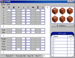

winYAMB is a game for Windows which resembles similar dice game. The only difference between two of them is that winYAMB is a solitaire game, and original Yamb game is for two or more players. This represents in lack of couple of game columns which exists in original Yamb game but not in winYAMB. Therefore winYAMB may serve as a training game before the real Yamb encounter starts. Also winYAMB is played with six dices and real Yamb only with five. Six dice only serves as an opportunity to gain some better combinations and maybe better score rating.
 |